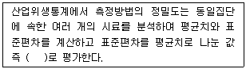
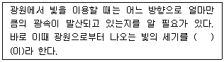
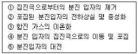
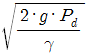
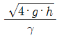
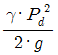
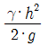
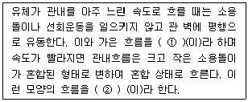

산업위생관리산업기사 (2010-03-07 기출문제)
1과목: 산업위생학 개론
1. 물질에 관한 생물학적 노출지수(BEIs)를 측정하려 할 때 주말작업 종료시에 시료 채취하는 것은?
- 트리클로로에틸렌
- 이황화탄소
- 일산화탄소
- 자일렌(크실렌)
(정답률: 57%)

2. 근골격계질환을 예방하기 위한 작업환경개선의 방법으로 인체측정치를 이용한 작업환경의 설계가 있다. 이와 관련한 설명 중 가장 먼저 고려되어야 할 부분은?
- 조절가능 여부
- 최대치의 적용여부
- 최소치의 적용여부
- 평균치의 적용여부
(정답률: 83%)
3. 다음 중 강도율을 바르게 나타낸 것은?
- (근로손실일수 / 총근로시간수) × 103
- (재해건수 / 평균종업원수) × 103
- (재해건수 / 총근로시간수) × 106
- (재해건수 / 평균종업원수) × 106
(정답률: 82%)
4. 다음 중 피로의 예방대책으로 볼 수 없는 것은?
- 불필요한 동작을 피하고 에너지 소모를 적게 한다.
- 각 개인마다 작업량을 조절한다.
- 가능한 한 정적인 작업을 하도록 한다.
- 작업환경을 정비ㆍ정돈한다.
(정답률: 91%)
5. 다음 중 바람직한 근무 교대제로 볼 수 있는 것은?
- 야간근무의 연속은 2~3일 정도로 한다.
- 연속근무의 경우 3교대 3조로 편성한다.
- 야근종료 후의 휴식은 32시간 이내로 한다.
- 야간 교대시간은 심야로 정한다.
(정답률: 69%)
6. 물리적 인자의 노출기준상 충격소음의 1일 노출횟수가 500회일 때의 허용 충격소음의 강도는 얼마인가?
- 110dB(A)
- 120dB(A)
- 130dB(A)
- 140dB(A)
(정답률: 53%)
7. 세계 최초의 직업성 암으로 보고된 음낭암의 원인물질로 규명된 것은?
- 검댕(soot)
- 구리(copper)
- 납(lead)
- 황(sulfur)
(정답률: 92%)
8. 다음 중 심리학적 적성검사로 가장 알맞은 것은?
- 지능검사
- 작업적응성검사
- 감각기능검사
- 체력검사
(정답률: 58%)
9. 20℃, 1기압에서 MEK(그램분자량 72.06) 100ppm은 몇 mg/m3 인가?
- 294.7
- 299.7
- 394.7
- 399.7
(정답률: 67%)
10. 다음 중 TLV의 적용상의 주의사항으로 옳은 것은?
- 반드시 산업위생전문가에 의하여 적용되어야 한다.
- TLV는 안전농도와 위험농도를 정확히 구분하는 경계선이 된다.
- TLV는 독성의 강도를 비교할 수 있는 지표가 된다.
- 기존의 질병이나 육체적 조건을 판단하기 위한 척도로 사용될 수 있다.
(정답률: 72%)
11. 다음 중 산업안전보건법상 용어의 정의가 잘못된 것은?
- 밀폐공간이라 함은 산소결핍, 유해가스로 인한 화재ㆍ폭발 등의 위험이 있는 장소로서 별도로 정한 장소를 말한다.
- 산소결핍증이라 함은 산소가 결핍된 공기를 들여 마심으로써 생기는 증상을 말한다.
- 산소결핍이라 함은 공기중의 산소농도가 18% 미만인 상태를 말한다.
- 적정한 공기라 함은 산소농도의 범위가 18% 이상 23.5%미만, 탄산가스의 농도가 1.0% 미만, 황화수소의 농도가 100ppm 미만인 수준의 공기를 말한다.
(정답률: 82%)
12. 다음 중 납이 인체에 미치는 영향과 가장 거리가 먼 것은?
- 조혈기능에 장해
- 신경계통의 장해
- 신장에 미치는 장해
- 간에 미치는 장해
(정답률: 67%)
13. 일반적으로 산소 1L 에 생산되는 에너지양은 몇 kcal 정도 인가?
- 1.5
- 5
- 9
- 15
(정답률: 73%)
14. 미국의 산업위생학회(AIHA)에서 정의하고 있는 산업위생의 정의에 포함되지 않는 용어는?
- 예측(anticipation)
- 측정(recognition)
- 평가(evaluation)
- 증진(promotion)
(정답률: 88%)
15. 다음 중 작업환경에서 식품과 영양소에 대한 설명으로 틀린 것은?
- 단백질, 탄수화물, 지방, 무기질 및 비타민을 5대 영양소라 한다.
- 열량의 공급원은 탄수화물, 지방, 단백질이다.
- 칼륨은 치아와 골격을 구성하며 철분은 혈액을 구성한다.
- 신체의 생활기능을 조절하는 영양소에는 비타민, 무기질 등이 있다.
(정답률: 84%)
16. 다음 중 직업성 경견완 증후군 발생과 연관되는 작업으로 가장 거리가 먼 것은?
- 전화교환작업
- 키펀치작업
- 금전등록기의 계산작업
- 전기톱에 의한 벌목작업
(정답률: 78%)
17. 다음 중 Viteles가 분류한 산업피로의 3가지 본질과 가장 거리가 먼 것은?
- 생체의 생리적 변화
- 피로감각
- 작업량의 감소
- 재해의 유발
(정답률: 48%)
18. 미국의 산업안전보건연구원(NIOSH)의 정의에 따르면 중량물 취급 작업의 감시기준(AL)이 30Kg이라면 최대허용기준(MPL)은 몇 kg 인가?
- 45
- 60
- 75
- 90
(정답률: 83%)
19. 다음 중 작업장에 존재하는 유해인자와 직업성 질환의 연결이 잘못된 것은?
- 망간 - 신경염
- 분진 - 규폐증
- 이상기압 - 잠함병
- 6가 크롬 - 레이노씨 병
(정답률: 86%)
20. 산업안전보건법에 의하면 최소 상시근로자 몇 인 이상의 사업장은 1인 이상의 보건관리자를 선임하여야 하는가?
- 10인 이상
- 50인 이상
- 100인 이상
- 300인 이상
(정답률: 87%)
2과목: 작업환경측정 및 평가
21. 부피비로 0.01% 는 몇 ppm 인가?
- 10ppm
- 100ppm
- 1000ppm
- 10000ppm
(정답률: 72%)
22. 음압도 측정시 정상청력을 가진 사람이 1000Hz에서 가청할 수 있는 최소 읍압 실효치는?
- 0.002N/m2
- 0.0002N/m2
- 0.00002N/m2
- 0.000002N/m2
(정답률: 57%)
23. 작업환경측정 단위에 대한 설명으로 옳은 것은?
- 분진은 mℓ/m3 로 표시한다.
- 석면의 표시단위는 개수/m3 로 표시한다.
- 고열(복사열 포함) 의 측정 단위는 습구흑구온도지수(WBGT)를 구하여 ℃로 표시한다.
- 가스 및 증기의 노출기준 표시단위는 ppm 또는 mg/ℓ 등으로 표시한다.
(정답률: 59%)
24. 호흡성 먼지를 채취할 때 입자의 크기가 10μm 이상인 경우의 채취효율(폐의 침착율, 미국 ACGIH기준)로 가장 적절한 것은?
- 75%
- 50%
- 25%
- 0%
(정답률: 36%)
25. 직경분립충돌기 장치가 싸이클론 분립장치 보다 유리한 장점이 아닌 것은?
- 호흡기 부분별로 침착된 입자 크기의 자료를 추정 할 수 있다.
- 입자의 질량크기분포를 얻을 수 있다.
- 채취시간이 짧고 시료의 되튐현상이 없다.
- 흡입성, 흉곽성, 호흡성 입자의 크기별로 분호와 농도를 계산할 수 있다.
(정답률: 72%)
26. ( ) 안에 옳은 내용은?

- 분산수
- 기하평균치
- 변이계수
- 표준오차
(정답률: 78%)
27. 분석에서의 계통오차(systematic error)가 아닌 것은?
- 외계오차
- 개인오차
- 기계오차
- 우발오차
(정답률: 71%)
28. 옥외 작업장(태양광선이 내리쬐는 장소)의 자연습구온도=29℃, 건구온도=33℃, 흑구온도=36℃, 기류속도 = 1m/s 일 때 WBGT 지수 값은?
- 약 31℃
- 약 32℃
- 약 33℃
- 약 34℃
(정답률: 87%)
29. 여과포집에 적합한 여과재의 조건이 아닌 것은?
- 포집대상 입자의 입도분포에 대하여 포집효율이 높을 것
- 포집시의 흡입저항은 될 수 있는 대로 낮을 것
- 접거나 구부리더라도 파손되지 않고 찢어지지 않을 것
- 될 수 있는 대로 흡습률이 높을 것
(정답률: 81%)
30. 가스크로마토그래피의 분리관의 성능은 분해능과 효율로 표시할 수 있다. 분해능을 높이려는 조작으로 틀린 것은?
- 분리관의 길이를 길게 한다.
- 고정상의 양을 크게 한다.
- 고체지지체의 입자 크기를 작게 한다.
- 일반적으로 저온에서 좋은 분해능을 보이므로 온도를 낮춘다.
(정답률: 49%)
31. 공기 10L 로부터 벤젠(분자량=78.1)을 고체흡착관에 채취하였다. 시료를 분석한 결과 벤젠의 양은 4mg이고, 탈착효율은 95%였다. 공기 중 벤젠 농도는? ( 단, 25℃, 1기압기준 )
- 약 87ppm
- 약 96ppm
- 약 113ppm
- 약 132ppm
(정답률: 40%)
32. 개인시료채취기(personal air sampler)로 1분 당 2L 의 유량으로 100분간 시료를 채취하였는데 채취 전 시료채취필터의 무게가 80mg, 채취 후 필터무게가 88mg 일 때 계산된 분진농도는?
- 10mg/m3
- 20mg/m3
- 40mg/m3
- 80mg/m3
(정답률: 85%)
33. MCE 막 여과지에 관한 설명으로 틀린 것은?
- MCE 막 여과지의 원료인 셀룰로스는 수분을 흡수하지 않기 때문에 중량분석에 잘 적용된다.
- MCE 막 여과지는 산에 쉽게 용해된다.
- 입자상 물질 중의 금속을 채취하여 원자흡광법으로 분석하는데 적정하다.
- 시료가 여과지의 표면 또는 표면 가까운 곳에 침착되므로 석면 등 현미경분석을 위한 시료채취에 이용된다.
(정답률: 71%)
34. 흡광광도법에 세기 의 단색광이 시료액을 통과하여 그 광의 50%가 흡수되었을 때 흡광도는?
- 0.3
- 0.4
- 0.5
- 0.6
(정답률: 72%)
35. 0.1watt의 소리에너지를 발생시키고 있는 자동차정비공장 리프트테이블 전동기의 음향파워레벨은? (단, 기준음향파워는 10-12watt)
- 1⑤ dB
- 110 dB
- 115 dB
- 120 dB
(정답률: 85%)
36. 작업환경 공기 중의 벤젠농도를 측정하였더니 8mg/m3, 5mg/m3, 7mg/m3, 3mg/m3, 6mg/m3 이었다. 이들 값의 기하평균치(mg/m3)는?
- 6.3
- 6.1
- 5.5
- 5.2
(정답률: 67%)
37. 공기채취기구의 보정을 위한 1차 표준기기에 해당되는 것은?
- 가스치환병
- 건식가스미터
- 열선기류계
- 습식테스트미터
(정답률: 87%)
38. 20℃, 1기압에서 에틸렌 글리콜의 증기압이 0.⑤mmHg 이라면 포화농도(ppm)는?
- 44
- 55
- 66
- 77
(정답률: 73%)
39. 고유량 공기 채취 펌프를 수동 무마찰 거품관으로 보정하였다. 비누방울이 500cm3의 부피까지 통과하는데 17.5초 걸렸다면 유량(L/min)은?
- 1.7
- 2.3
- 2.7
- 3.3
(정답률: 48%)
40. 입경이 10μm이고 비중이 1.2인 먼지입자의 침강속도는?
- 0.36cm/sec
- 0.48cm/sec
- 0.63cm/sec
- 0.82cm/sec
(정답률: 77%)
3과목: 작업환경관리
41. 다음 중금속 중 미나마타(Minamata)병과 관계가 깊은 것은?
- 납(Pb)
- 아연(Zn)
- 수은(Hg)
- 카드뮴(Cd)
(정답률: 72%)
42. 공학적 작업환경관리 대책중 대치가 적절치 못한 것은?
- 세탁시에 화재 예방을 위하여 석유나프타 대신 4클로로에틸렌 사용
- TCE 대신에 계면활성제 사용하여 금속세척
- 큰 날개에서 고속 작은 날개의 송풍기 사용으로 진동 방지
- 샌드브라스트 적용시 모래를 대신하여 철가루 사용
(정답률: 62%)
43. 근로자가 귀덮개(NRR=27)를 착용하고 있는 경우 미국 OSHA의 방법으로 계산한다면 차음효과는?
- 5 dB
- 8 dB
- 10 dB
- 12 dB
(정답률: 81%)
44. 방진재인 공기스프링에 관한 설명으로 옳지 않은 것은?
- 부하능력이 광범위하다.
- 압축기 등의 부대시설이 필요하지 않다.
- 구조가 복잡하고 시설비가 많다
- 사용진폭이 적은 것이 많아 별도의 댐퍼가 필요한 경우가 많다.
(정답률: 58%)
45. 저온에 의한 생리반응으로 옳지 않은 것은?
- 말초혈관의 수축으로 표면조직의 냉각이 온다.
- 저온환경에서는 근육활동이 감소하여 식욕이 떨어 진다.
- 피부나 피하조직을 냉각시키는 환경온도 이하에서는 감염에 대한 저항력이 떨어지며 회복과정의 장해가 온다.
- 피부혈관 수축으로 순환능력이 감소되어 상대적으로 혈류량이 증가함으로 혈압이 일시적으로 상승된다.
(정답률: 72%)
46. 소음에 대한 차음을 위해 사용하는 귀덮개와 귀마개를 비교 설명한 내용으로 옳지 않은 것은?
- 귀덮개의 크기를 여러 가지로 할 필요가 없다.
- 귀덮개는 고온다습한 작업장에서 착용하기 어렵다.
- 귀덮개는 귀마개보다 작업자가 착용하고 있는지 여부를 체크하기 쉽다.
- 귀덮개는 귀마개보다 일반적으로 차음효과가 크지만 개인차가 크다.
(정답률: 75%)
47. 고압환경에서의 2차적인 가압현상(화학적 장해)에 관한 내용으로 옳지 않은 것은?
- 공기 중의 질소 가스는 4기압 이상에서 마취작용을 나타낸다.
- 산소의 분압이 2기압이 넘으면 산소중독증세가 나타난다.
- 산소중독 증상은 폭로가 중지된 후에도 상당 기간 지속되어 비가역적인 증세를 유발한다.
- 이산화탄소농도의 증가는 산소의 독성과 질소의 마취작용 그리고 감압증의 발생을 촉진시킨다.
(정답률: 60%)
48. 감압병의 예방과 치료에 관한 설명으로 옳지 않은 것은?
- 특별히 잠수에 익숙한 사람을 제외하고는 1분에 10m 정도씩 잠수하는 것이 안전하다.
- 감압이 끝날 무렵 순수한 산소를 흡입시키면 예방적 효과가 있을 뿐 아니라 감압시간을 25% 가량 단축시킨다.
- 감압병 증상이 발생하였을 때에는 환자를 바로 원래의 고압환경에 복귀시키거나 인공적 고압실에 넣어 혈관 및 조직 속에 발생한 질소의 기포를 다시 용해시킨 다음 천천히 감압한다.
- 헬륨은 질소보다 확산속도가 작고 체외로 배출되는 시간이 질소에 비하여 2배 가량이 길어 고압환경에서 작업할 때는 질소를 헬륨으로 대치한 공기를 호흡 시킨다.
(정답률: 61%)
49. 생체와 환경사이의 열 교환에 미치는 요인과 가장 거리가 먼 것은?
- 기류
- 기압
- 기습
- 복사열
(정답률: 50%)
50. 고온다습한 환경에 노출될 때 체온조절중추 특히 발한중추의 장해로 발생하며 가장 특이적인 소견은 땀을 흘리지 못하여 체열 발산을 하지 못하는 고열장해는?
- 열사병
- 열피비
- 열경련
- 열실신
(정답률: 62%)
51. 마이크로파가 건강에 미치는 영향에 관한 설명으로 옳지 않은 것은?
- 마이크로파의 생물학적 작용은 파장뿐만 아니라 출력, 노출시간, 노출된 조직에 따라서 다르다.
- 마이크로파는 백내장을 유발한다.
- 생화학적 변화로는 콜린에스테라제의 활성치가 감소한다.
- 마이크로파는 혈압을 상승시켜 결국 고혈압을 초래한다.
(정답률: 49%)
52. 방사선량인 흡수선량에 관한 내용으로 틀린 것은?
- 관용단위는 rem으로 상대적 생물학적 효과를 고려한 것이다.
- 조직(또는 물질)의 단위 질량당 흡수된 에너지의 개념이다.
- 방사선이 물질과 상호작용한 결과, 그 물질의 단위 질량에 흡수된 에너지를 의미한다.
- 모든 종류의 이온화 방사선에 의한 외부노출, 내부노출 등 모든 경우에 적용된다.
(정답률: 53%)
53. 다음 중에서 방독마스크의 사용 가능 여부를 가장 정확히 확인 할 수 있는 것은?
- 파과곡선
- 냄새유무
- 자극유무
- 용해곡선
(정답률: 71%)
54. 수심 30m에서 작용압은?(오류 신고가 접수된 문제입니다. 반드시 정답과 해설을 확인하시기 바랍니다.)
- 3기압
- 4기압
- 5기압
- 6기압
(정답률: 42%)
55. 진동 대책에 관한 설명으로 옳지 않은 것은?
- 체인톱과 같이 발동기가 부착되어 있는 것을 전동기로 바꿈으로써 진동을 줄일 수 있다.
- 공구로부터 나오는 바람이 손에 접촉하도록 하여 보온을 유지하도록 한다.
- 진동공구의 손잡이를 너무 세게 잡지 말도록 작업자에게 주의시킨다.
- 진동공구는 가능한 한 공구를 기계적으로 지지(支持)하여 주어야 한다.
(정답률: 74%)
56. 저기압 환경이 인체에 미치는 영향에 관한 설명으로 옳지 않은 것은?
- 저산소증은 잠수부가 급속하게 감압할 때와 같은 증상을 나타낸다.
- 고공성 폐수종은 어른보다 아이들에게서 많이 일어난다.
- 고공성 폐수종은 진해성 기침과 호흡곤란이 나타난다.
- 고공성 폐수종으로 폐동맥 혈압이 저하되며 해면에 복귀 후 급격한 탈수 증세를 유발한다.
(정답률: 48%)
57. 소음을 감소시키기 위한 대책으로 적합하지 않은 것은?
- 소음을 줄이기 위하여 병타법을 용접법으로 바꾼다.
- 소음을 줄이기 위하여 프레스법을 단조법으로 바꾼다.
- 기계의 부분적 개량을 위하여 노즐, 버너 등을 개량하거나 공명부분을 차단한다.
- 압축공기 구동기기를 전동기기로 대체한다.
(정답률: 63%)
58. ( )안에 옳은 내용은?

- 조도
- 광도
- 광량
- 휘도
(정답률: 69%)
59. 다음의 조건 중 방진마스크의 선정기준에 들지 않는 것은?
- 무게가 가벼울 것
- 시야가 넓을 것
- 흡기 저항이 클 것
- 포집효율이 높을 것
(정답률: 75%)
60. 방사선의 외부 노출에 대한 방어대책을 세울 경우에 착안하는 원칙과 가장 거리가 먼 것은?
- 차폐
- 개선
- 거리
- 시간
(정답률: 67%)
4과목: 산업환기
61. 직경이 d인 노즐의 분사구 속도는 분사구로부터 분출거리에 따라 그 속도가 떨어지는데 다음 중 분류중심의 속도가 거의 떨어지지 않는 거리로 옳은 것은?
- 5d 까지
- 10d 까지
- 15d 까지
- 20d 까지
(정답률: 50%)
62. 전기집진장치의 전기 집진과정을 올바르게 나열한 것은?

- ③ → ⑤ → ④ → ② → ①
- ④ → ② → ③ → ① → ⑤
- ⑤ → ③ → ① → ④ → ②
- ⑤ → ③ → ② → ④ → ①
(정답률: 50%)
63. 다음 중 후드의 유입계수(Ce)에 관한 설명으로 틀린 것은?
- 후드의 유입효율을 나타낸다.
- 유입계수가 1 에 가까울수록 압력손실이 작은 후드이다.
- 유입손실계수가 0 이면 유입계수는 1 이 된다.
- 유입계수는 이상적인 흡인유량/실제흡인유량 으로 정의된다.
(정답률: 35%)
64. 속도압은 Pd, 비중량은 γ, 수두는 h, 중력가속도를 g 라 할 때 다음 중 유체의관내 속도를 구하는 식으로 옳은 것은?




(정답률: 63%)
65. 다음 중 국소배기장치에 대한 압력측정용 장비가 아닌 것은?
- U자 마노미터
- 타코미터
- 피토관
- 경사 마노미터
(정답률: 62%)
66. 다음 중 국소배기시스템 설치시 고려사항으로 적절하지 않은 것은?
- 후드는 덕트보다 두꺼운 재질을 선택한다.
- 송풍기를 연결할 때에는 최소 덕트 직경의 3배 정도는 직선구간으로 하여야 한다.
- 가급적 원형 덕트를 사용한다.
- 곡관의 곡률반경은 최소 덕트 직경의 1.5 이상으로 하며, 주로 2.0을 사용한다.
(정답률: 85%)
67. 다음 중 덕트 제작 및 설치에 대한 고려사항으로 적절하지 않은 것은?
- 가급적 원형덕트를 설치한다.
- 덕트 연결부위는 가급적 용접하는 것을 피한다.
- 직경이 다른 덕트를 연결할 때에는 경사 30°이내의 테이퍼를 부착한다.
- 수분이 응축도리 경우 덕트 내로 들어가지 않도록 경사나 배수구를 마련한다.
(정답률: 80%)
68. 사염화에틸렌 20,000ppm 이 공기 중에 존재한다면 공기와 사염화에틸렌 혼합물의 유효비중은 얼마인가? (단, 사염화에틸렌의 증기비중은 5.7로 한다)(오류 신고가 접수된 문제입니다. 반드시 정답과 해설을 확인하시기 바랍니다.)
- 1.107
- 1.094
- 1.075
- 1.047
(정답률: 69%)
69. 다음 중 집진장치의 선정시 반드시 고려해야 할 사항으로 볼 수 없는 것은?
- 집진효율
- 오염물질의 회수율
- 오염물질의 농도 및 입자의 크기
- 총 에너지 요구량
(정답률: 64%)
70. 작업장에서 전체환기장치를 설치하고자 한다. 다음 중 전체환기의 목적으로 볼 수 없는 것은?
- 온도와 습도를 조절한다.
- 화재나 폭발을 예방한다.
- 유해물질의 농도를 감소시켜 건강을 유지시킨다.
- 유해물질을 발생원에서 직접 제거시켜 근로자의 노출농도를 감소시킨다.
(정답률: 82%)
71. 다음 중 후드의 필요환기량을 감소시키는 방법으로 적절하지 않은 것은?
- 오염물질의 절대량을 감소시킨다.
- 가급적이면 공정을 적게 포위한다.
- 후드 개구면에서 기류가 균일하게 분포되도록 설계한다.
- 포집형을 사용할 때에는 가급적 배출오염원에 가깝게 설치한다.
(정답률: 70%)
72. 폭이 10cm 이고, 길이가 1m 인 원주형 슬롯후드가 있다. 포착거리가 30cm 이고, 포착속도가 0.4m/s 라면 필요송풍량은 약 얼마인가?
- 8.6m3/min
- 11.5m3/min
- 20.1m3/min
- 32.5m3/min
(정답률: 43%)
73. 국소배기용 덕트 설계시 처리 물질에 따라 반송속도가 결정된다 다음 중 반송속도가 가장 늦은 물질은?
- 털
- 주물사
- 산화아연의 흄
- 그라인더 작업 발생먼지
(정답률: 53%)
74. 0℃, 1기압에서 공기의 비중량은 1.293kgf/m3 이다. 65℃의 공기가 송풍관 내를 15m/s 의 유속으로 흐를 때 속도압은 약 몇mmH2O 인가?
- 12
- 13
- 14
- 15
(정답률: 37%)
75. 작업장의 크기가 세로 10m, 가로 30m, 높이 6m 이고, 필요환기량이 90m3/min 일 때 1시간당 공기교환횟수는 몇 회인가?
- 2회
- 3회
- 4회
- 6회
(정답률: 74%)
76. 다음은 기류의 본질에 대한 내용이다. ① 과 ② 에 들어갈 내용이 알맞게 연결된 것은?

- ① : 층류 ② : 난류
- ① : 난류 ② : 층류
- ① : 유선운동 ② : 층류
- ① : 난류 ② : 유선운동
(정답률: 72%)
77. 다음 중 깃의 구조가 분진을 자체 정화할 수 있도록 되어 있어 고농도공기나 부식성이 강한 공기를 이송시키는데 많이 사용되는 송풍기는?
- 다익팬형 원심송풍기
- 레이디얼팬형 원심송풍기
- 터보 블로어형 송풍기
- 축류형 송풍기
(정답률: 38%)
78. 밀가루공장 내에 설치된 제진장치의 용량은 8000m3/min이고, 분진 발생원에서 제진기를 거쳐 송풍기까지 전체 압력손실이 50mmH2O 라면 송풍기의 동력은 약 몇 kW인가? (단, 송풍기의 효율은 0.6, 안전계수는 1.5 로 한다.)
- 108.9
- 157.9
- 163.4
- 179.4
(정답률: 48%)
79. 작업장 내에서는 톨루엔(분자량 92, TLV 100ppm)이 시간당 300g 씩 증발되고 있다. 이 작업장에 전체환기 장치를 설치할 경우 필요환기량은 약 얼마인가? (단, 주위는 21℃, 1기압이고, 여유계수는 6 으로 하며, 톨루엔은 모두 공기와 완전혼합된 것으로 한다.)
- 73.04m3/min
- 78.59m3/min
- 4382.61m3/min
- 4715.22m3/min
(정답률: 52%)
80. 송풍기로 공기를 흡인할 때 덕트 내의 전압, 정압, 동압 상태를 올바르게 설명한 것은?
- 전압, 정압, 동압 모두 읍압이다.
- 전압, 정압, 동압 모두 양압이다.
- 전압과 정압은 음압이고, 동압은 양압이다.
- 전압은 양압이고, 정압과 동압은 음압이다.
(정답률: 63%)
"트리클로로에틸렌"은 BEIs를 측정하는 데 사용되는 화학물질 중 하나입니다. 이유는 트리클로로에틸렌이 일반적으로 산업에서 많이 사용되며, 인체에 노출될 경우 간질, 두통, 혼수 등의 증상을 유발할 수 있기 때문입니다. 따라서 BEIs를 측정하는 데 있어서 트리클로로에틸렌의 노출량 측정은 중요한 역할을 합니다.